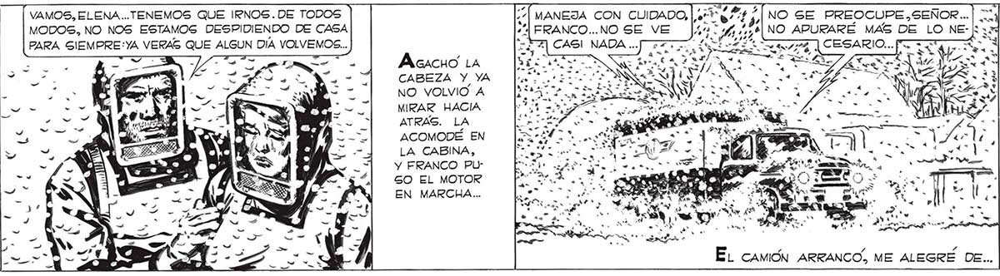
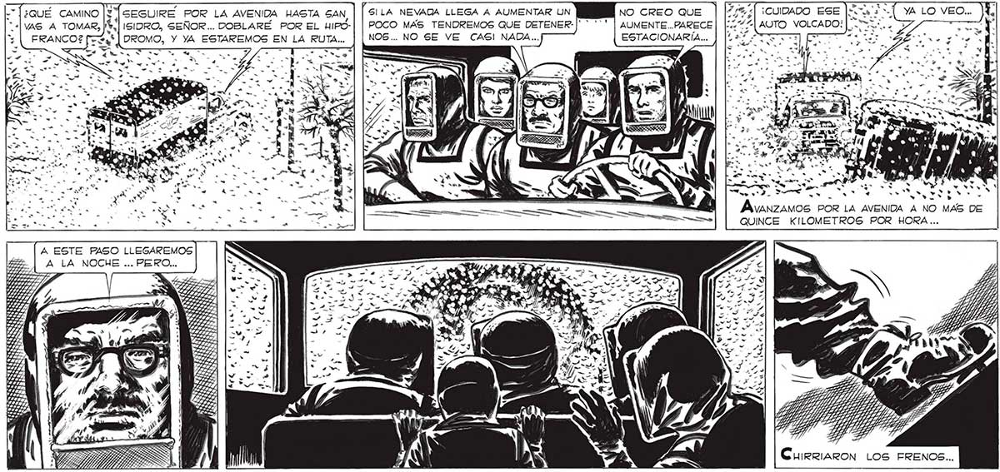

/Á MANEJA CON GUIDADO, FRANCO...NO SE VE 7] CASI NADA ... | VAMOS, ELENA..TENEMOS QUE IRNOS.DE TODOS MODOS, NO NOS ESTAMOS DESPIDIENDO DE CASA PARA GIEMPRE:YA VERAS QUE ALGUN DIA VOLVEMOS... ÁAcacuo LA CABEZA Y YA NO VOLVIO A MIRAR HACIA ATRAS. LA ACOMODÉ EN LA CABINA, Y FRANCO PUGO EL MOTOR EN MARCHA... SILA NEVADA LLEGA A AUMENTAR UN POCO MAS TENDREMOS QUE DETENERNOS... NO SE VE CASI NADA... SEGUIRE POR LA AVENIDA HASTA SAN, «| ISIDRO, SEÑOR... DOBLARE POR EL HIPO: $ | DROMO, Y YA ESTAREMOS EN LA RUTA... - e MA so "Y €... ÍA FRANCO? 7 SS Ed 4 a 4 rl A y” .s f ! 1 , + 4 yu 1] A e "AS e 4 4 as Vane 1 Bar, Y PP TALA ¿2 A d pS y Y £ A ESTE FASO LLEGAREMOS A LA NOCHE ... PERO... NO SE PREOCUPE,SEÑOR... .QUE LA NEVA: 331 NO APURARÉ MAS DE LO NE- DA HUBIERA ARRE: na LESÓRO. Ie CIADO: EN UN INSFAA TANTE EL CHALET DESAPARECIO. DE NUESTRA VISTA. Y LA CALLE,LA CALLE DONDE HABIAMOS VIVIDO LOGS MEJORES AÑOS DE NUESTRA VIDA SE ESFUMO TAMBIÉN, REDUOCIDA A LOS POCOS METROS QUE LOS FAROS DEL CAMION CONSEGOUIAN HACER VISIBLE. NO CREO QUE | |4:2.“Í ¡CUIDADO ESE PE EE AUMENTE... PARECE | |. | AUTO VOLCADO! ESTACIONARÍA... | [121337] [57 o NS a NOS NOS Má N NS A et EL ps E EE LA “3 TS N CuUIRRIARON LOS FRENOS...

